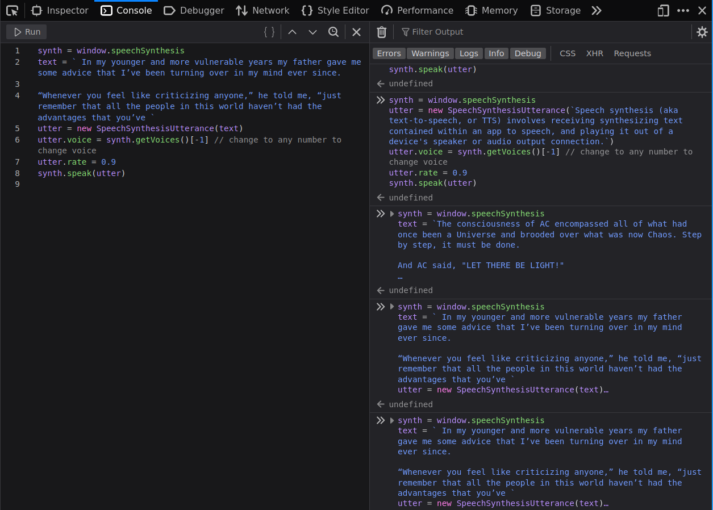

Nếu bạn từng có nhu cầu nghe thay vì đọc (tiếng Anh), 5 dòng code JavaScript ngay trên trình duyệt có thể làm điều đó!
Bật Web developer console
Bấm Ctrl-Shift-K https://firefox-source-docs.mozilla.org/devtools-user/web_console/index.html

synth = window.speechSynthesis
text = ` In my younger and more vulnerable years my father gave me some advice that I’ve been turning over in my mind ever since.
“Whenever you feel like criticizing anyone,” he told me, “just remember that all the people in this world haven’t had the advantages that you’ve `
utter = new SpeechSynthesisUtterance(text)
utter.voice = synth.getVoices()[-1] // change to any number to change voice - giọng đọc, thay -1 bằng số khác để đổi giọng
utter.rate = 0.9 // speed - tốc độ
synth.speak(utter)
Text from The Great Gatsby by F. Scott Fitzgerald
Speech Synthesis
Speech synthesis (aka text-to-speech, or TTS) involves receiving synthesizing text contained within an app to speech, and playing it out of a device's speaker or audio output connection. https://developer.mozilla.org/en-US/docs/Web/API/Web_Speech_API/Using_the_Web_Speech_API#speech_synthesis
Speech synthesis (còn gọi là text-to-speech hay TTS) là việc "biến" chữ viết thành dạng nói và phát ra loa.
Utterance
The Web Speech API has a main controller interface for this — SpeechSynthesis — plus a number of closely-related interfaces for representing text to be synthesized (known as utterances), voices to be used for the utterance, etc. Again, most OSes have some kind of speech synthesis system, which will be used by the API for this task as available.
Chữ sẽ được đọc được gọi là "utterance". Giọng đọc được lấy từ hệ thống speech synthesis có trên hệ thống, API của trình duyệt web chỉ tương tác với hệ thống này.
Vì vậy giọng đọc trên MacOS có thể khác Windows và sẽ khác Linux.
Tham khảo
Kết luận
Đọc chữ với 5 dòng code trên trình duyệt, giờ có thể nhắm mắt... và nằm nghe (chứ đừng xuôi tay).
Hết.
HVN at http://pymi.vn and https://www.familug.org.